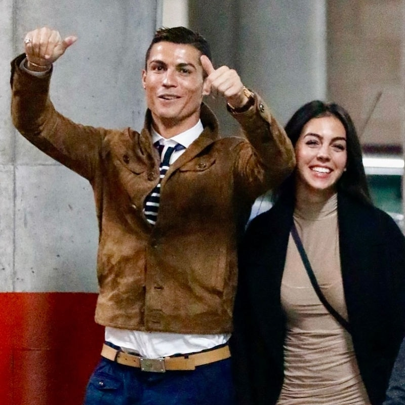

12 Girlfriends · 5 Kids, 3 Moms — A Romantic Saga
A prolific love life: Ronaldo's romantic history is football's most-watched soap, with more than a dozen confirmed and rumoured partners. From supermodels to socialites, from models to shop assistants, his girlfriend list spans multiple circles, earning him the media nickname 'football's biggest player' — a romantic CV as staggering as it gets.
The Paris Hilton rumour: In the 2000s Ronaldo was briefly linked to American socialite Paris Hilton, the two repeatedly spotted getting close at Los Angeles nightclubs. The Hilton family fortune plus Ronaldo's superstar status catapulted the rumour onto global gossip pages — a textbook high-society fling.
The Kim Kardashian interlude: In 2010 Ronaldo was spotted touring Madrid with Kim Kardashian, sparking a furore. Kardashian later played coy on her show, deepening the mystery. Two Hollywood socialite rumours made Ronaldo's 'dating record' as head-turning as his football stats, and the 'player' label stuck.
Five years with Irina: Ronaldo's most serious public relationship was with Russian supermodel Irina Shayk. They met on the set of an Armani ad in 2010, dated for five full years and at one point talked of marriage. They abruptly split in 2015, rumoured to be tied to friction with Ronaldo's mother Dolores — a romance that lost to family.
Georgina arrives: In 2016 Ronaldo met sales assistant Georgina Rodríguez at a Gucci boutique in Madrid; the 'Cinderella' romance rapidly heated up and continues to this day. Georgina has borne two of Ronaldo's children and, as his fiancée, is deeply involved in the CR7 business empire — a shop assistant transformed into a global influencer.
The drug-convict father-in-law: Media (The Sun etc.) later dug up that Georgina's biological father Jorge Rodríguez had been sentenced to 10 years in prison for smuggling cocaine from Argentina to Spain and served years inside. Ronaldo's engagement to a woman with that family background added a dark tint to the 'life winner' narrative. Note: Jorge is Georgina's biological father (a father-in-law relationship), not Ronaldo's blood relative, but his drug conviction sits jarringly against the painstakingly built 'disciplined, clean' image.
Five kids, three mums: Most controversial is that Ronaldo's 5 children appear to come from 3 mothers: eldest son Cristiano Jr (2010) has a still-mysterious mother, rumoured to be a surrogate; the 2017 twins Mateo and Eva were also via surrogate, by another surrogate mother; while Alana (2017) and Bella (2022) were borne by Georgina. The three-mum, five-kid configuration is jaw-dropping.
Privacy and controversy: Surrogacy rumours, the lifetime NDA signed by Cristiano Jr's mother, multiple seamless relationships… Ronaldo's private life is forever shrouded in money and NDAs. The media paints him as a 'life winner', but the complicated history of 12 girlfriends, 5 kids and 3 mums keeps interrogating the 'good man', 'good father' image, controversy hard to talk about behind the glory.